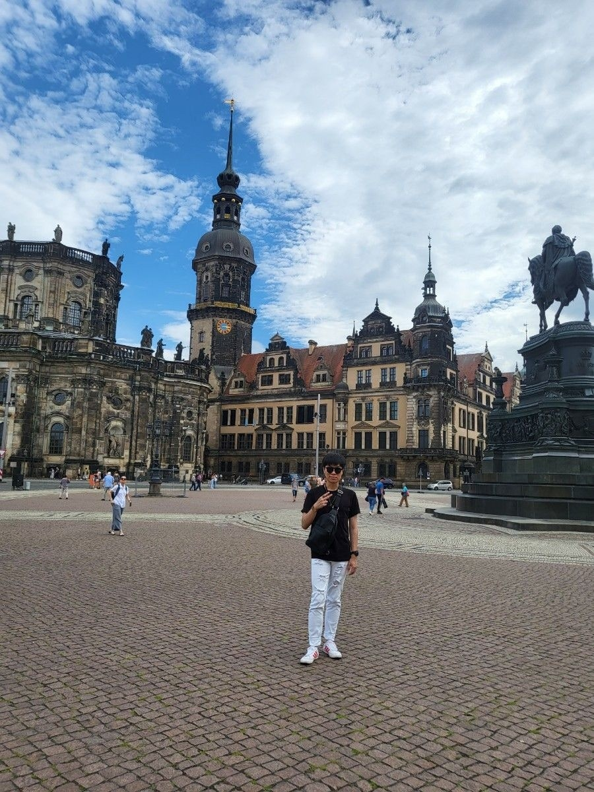

About Me

Sunjun Brian Hwang
an undergraduate researcher at Yonsei University. What pulls me across so many fields — quantum computing, AI security, federated learning, autonomous driving — is the same gap each time: how a system is supposed to behave, and how it actually behaves under noise, adversarial pressure, hardware faults, or real-world constraints. That gap is where my research lives.
The Researcher
Dual Major in CS & Physics
I'm pursuing both Computer Science and Physics (Quantum Mechanics) at Yonsei. The combination is intentional — physics gives me a different mathematical vocabulary for thinking about uncertainty, and CS gives me the tools to actually build with it. Quantum ML sits naturally at this intersection.
Theory ↔ Implementation
I believe the most useful research lives between disciplines, and between theory and practice. Every algorithm I study, I want to see running — on an FPGA, on a real NISQ device, in a federated learning client. Theory without implementation is incomplete; implementation without theory is brittle.
I Document Obsessively
This site is just one of several I maintain — there's a CV, a research portal, a personal Wiki, an Overleaf / LaTeX guide, paper reviews, and a CS conference / journal tracker, all linked from the sidebar. Half of them started as notes to my future self.
Beyond Research
Outside the lab, I play electric guitar, bass, and drums — usually loud enough that the neighbors can tell when a paper deadline has just passed.
The Person
Why I Chose Research
Honestly, no million-dollar business idea has ever come to me. But I'm fortunate to have a financial setup that gives me room to think — and when you have that room, research is the most interesting thing I can imagine doing with it. I get to chase questions instead of revenue.
The Cat in the Favicon
Why a cat? Because Schrödinger. Quantum mechanics was the first time I felt physics could be both rigorous and beautifully strange, and Schrödinger's thought experiment is the cleanest expression of that — a system that is neither this nor that until you look. The cat sits at the top of every tab as a quiet daily reminder of what got me here.
Small Joys
Watching a younger sibling or junior happily eat a meal I bought. Seeing a junior finally crack a problem they asked me about a week earlier. Plugging in the electric guitar for band practice and locking into a groove. The small wins are the real ones.
Let's Talk
I genuinely enjoy helping people figure things out, and I'm the older-brother type with younger juniors. Equally happy to talk about Bell inequalities, your latest paper draft, or just how your week has been. Research conversations are great — casual ones are equally welcome.
Languages I Speak
Korean (native) and English (fluent). Currently learning Japanese and Spanish — slowly, mostly so I can read papers from more communities and travel with a little more confidence.
My Roots & Travel
I've lived in Seoul my whole life. To balance that rootedness, I try to travel abroad at least twice a year — different cities, different languages, different food. The contrast keeps me curious and reminds me how much I still don't know.
"When something is important enough, you do it even if the odds are not in your favor." — Elon MuskWhy this line stuck with me: I first ran into it when I was deciding whether to push a research direction that nobody around me believed in. It reminded me that most meaningful work looks irrational from the outside — and that the only honest way to find out whether it's worth doing is to do it. I come back to it every time the odds for a paper, a project, or just an idea start looking thin.